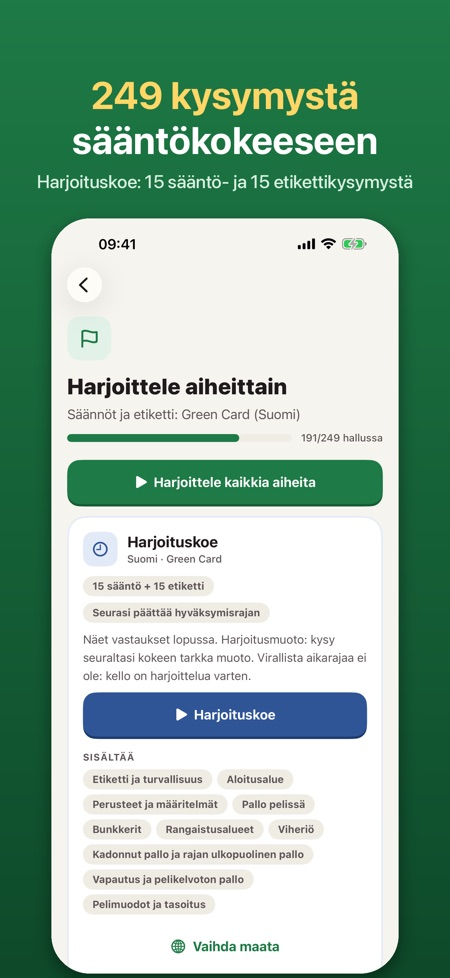
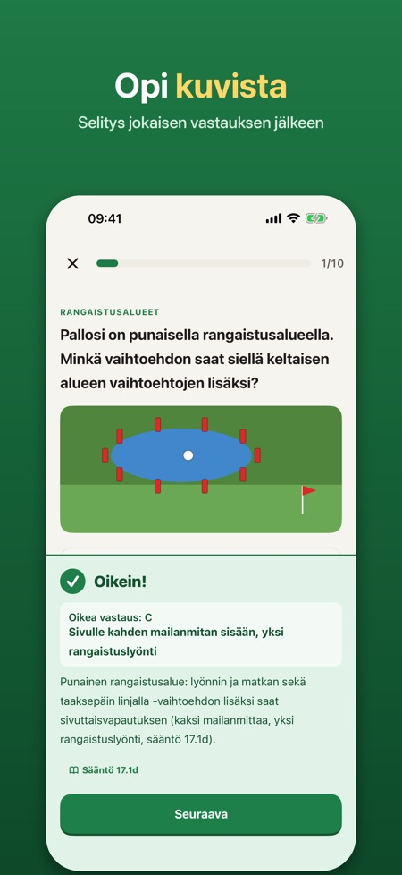
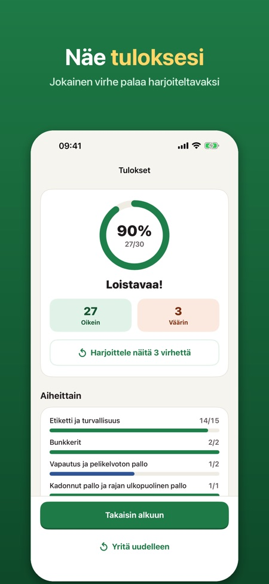

Golfin säännöt ja etiketti. Nyt 249 kysymystä, myös vuoden 2023 sääntömuutoksista. Harjoittele Green Card -sääntökokeeseen, selitys jokaisen vastauksen jälkeen.



Valmistaudu sääntö- ja etikettikokeeseen, jonka suoritat ennen kuin saat pelata golfkentällä (Green Card). Maksa kerran, ei tilausta.
SISÄLTÖ
• 249 kysymystä 10 aiheessa: etiketti ja turvallisuus, aloitusalue, perusteet, pallo pelissä, bunkkerit, rangaistusalueet, viheriö, kadonnut pallo ja rajan ulkopuolella, vapautus ja pelikelvoton pallo, pelimuodot ja tasoitus
• Kuvakysymyksiä piirretyillä kenttätilanteilla (rangaistusalueet, rajapaalut, aloitusalue, autopolku)
• Selitys jokaisen vastauksen jälkeen suomeksi, englanniksi, norjaksi, ruotsiksi tai saksaksi
• Harjoituskoe: 30 kysymystä (15 sääntö- ja 15 etikettikysymystä); seura päättää hyväksymisrajan
• Virheesi palaavat, kunnes olet vastannut oikein kahdesti peräkkäin
• Sääntöhaku: lyhyitä ja selkeitä vastauksia kysymykseen ”Mitä teen, kun…?”, säännön numerolla
• Ensimmäisen kierroksen muistilista: mitä ottaa mukaan ja miten kentällä toimitaan
MYÖS NORJAAN, RUOTSIIN JA ITÄVALTAAN
Valitse maa, niin kysymykset tulevat sen maan kokeen kielellä.
REILU HINTA
Kymmenen maistiaiskysymystä, yksi lyhyt harjoituskoe, sääntöhaku ja muistilista ovat käytössä ilman ostoa. Avaa kaikki yhdellä ostolla. Ei tilausta, ei mainoksia, ei tiliä. Toimii ilman verkkoyhteyttä.
Seura päättää kokeen muodon ja hyväksymisrajan; harjoituskoe on harjoitusta, joten kysy seuraltasi, miten koe suoritetaan.
Sovellus on itsenäinen eikä liity Suomen Golfliittoon, The R&A:han tai USGA:han. Kaikki kysymykset ja sääntötiivistelmät ovat omiamme; ne eivät ole virallisia koekysymyksiä tai sääntötekstiä.